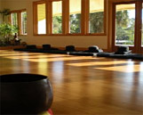

Franciscan Center
3010 Perry Avenue, Tampa, Florida 33603 P: (813) 229-2695 F: (813) 228-0748
DIRECTIONS (from Gainesville, PDF format)

22259 NW 75 Avenue Road Micanopy, FL 32667 Email: contact@casamicanopy.com